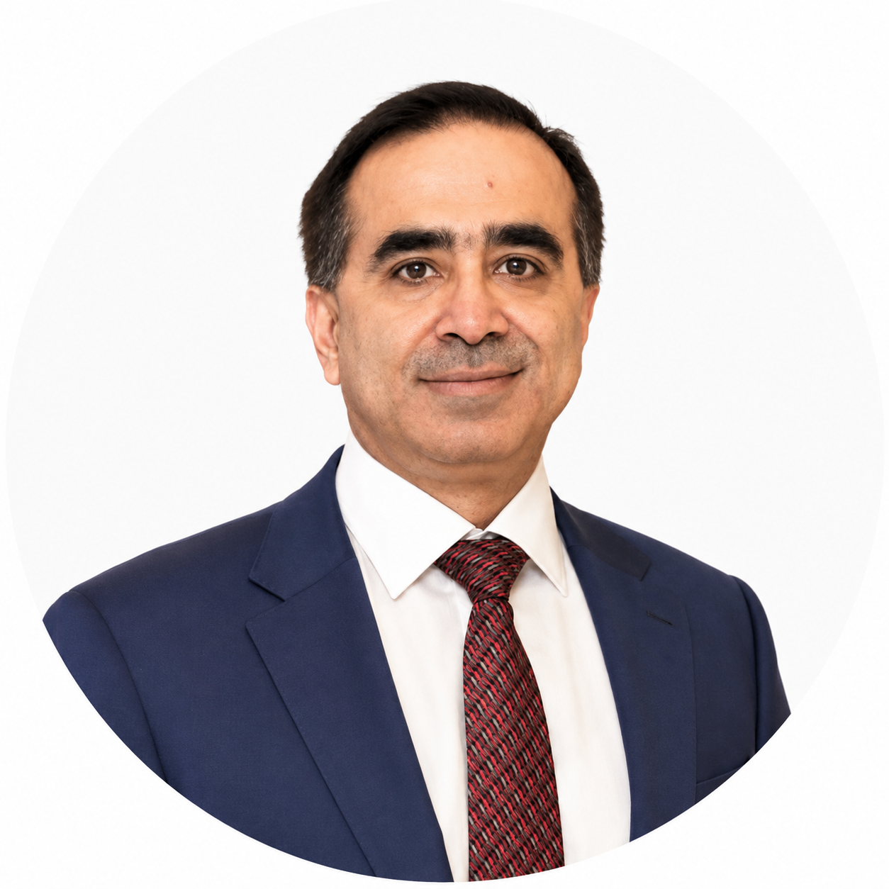

Ibrahim Amin
Professional Profile
Mr. Ibrahim Amin is a distinguished entrepreneur, technology strategist, and business leader recognized for driving innovation, digital transformation, and entrepreneurship across Pakistan. With extensive experience spanning finance, technology, cybersecurity, and organizational leadership, he has established himself as a respected figure within Pakistan’s startup and digital economy. He is widely acknowledged for mentoring emerging entrepreneurs, supporting technology-driven businesses, and promoting innovation through national entrepreneurial platforms.
Leadership Positions
- Chairman, Pakistan Muccadam Association (PMA)
- Chairman & Co-Founder, Pakistan Freelancers Association (PAFLA)
- Owner, M/s Tristar International (Pvt.) Ltd.
Through these leadership roles, Mr. Ibrahim Amin actively promotes entrepreneurship, digital transformation, institutional development, and sustainable business growth while strengthening Pakistan’s technology, freelancing, banking support, and professional services sectors.
Chairman — Pakistan Muccadam Association (PMA)
As Chairman of the Pakistan Muccadam Association (PMA), Mr. Ibrahim Amin provides strategic leadership to the Association, working to modernize and strengthen Pakistan’s Muccadam (Warehousing) industry through innovation, professional development, and institutional collaboration. Under his leadership, the Association promotes best practices in warehousing, collateral management, stock monitoring, and banking support services while fostering stronger engagement between financial institutions, regulatory authorities, and industry stakeholders.
Mr. Amin is committed to advancing digital transformation within the sector by encouraging the adoption of technology-driven solutions, enhancing governance standards, and improving operational transparency and efficiency. His vision is to position PMA as Pakistan’s leading professional body representing Muccadams, advocating for industry excellence, capacity building, regulatory compliance, and sustainable growth in support of the country’s banking and financial ecosystem.
Professional Experience
Over the course of his career, Mr. Amin has successfully led strategic initiatives in Financial Technology (FinTech), Banking Digitalization, Cybersecurity, Information Technology, Digital Transformation, Corporate Strategy, Innovation Management, and Startup Development. He has also served as Chairman of Dellsons Group, where he spearheaded multiple initiatives focused on business growth, technology integration, and operational excellence.
Startup Ecosystem & Mentorship
Mr. Amin is an active mentor and advisor to startups, entrepreneurs, and technology innovators. He has evaluated and mentored numerous emerging businesses through Pakistan’s leading incubation and innovation platforms. His experience as a judge and mentor has helped identify and nurture promising startups capable of creating meaningful economic and technological impact.
National Contributions
Mr. Amin has served as a judge and mentor for prestigious entrepreneurial initiatives, including the National Incubation Center (NIC) and the IBA Sindh Research & Incubation Center (IBA SRIC), reflecting his commitment to fostering innovation, entrepreneurship, and technological advancement in Pakistan.
Awards & Recognitions
- Best Judge of the Year — National Incubation Center
- Founder & Chairman — Pakistan Freelancers Association (PAFLA)
- Advisory Board Member — Digital Pakistan Conference
Areas of Expertise
- Strategic Leadership
- Digital Transformation
- Entrepreneurship Development
- Startup Mentorship
- Banking Technology
- Financial Innovation
- Cybersecurity
- Corporate Strategy
- Organizational Development
- Technology Consulting
- Innovation Ecosystem Development
Leadership Vision
Mr. Ibrahim Amin believes that innovation, technology, and entrepreneurship are the driving forces behind sustainable economic growth. Through visionary leadership, strategic partnerships, and continuous mentorship, he remains committed to empowering entrepreneurs, advancing digital transformation, and strengthening Pakistan’s position in the global technology landscape.